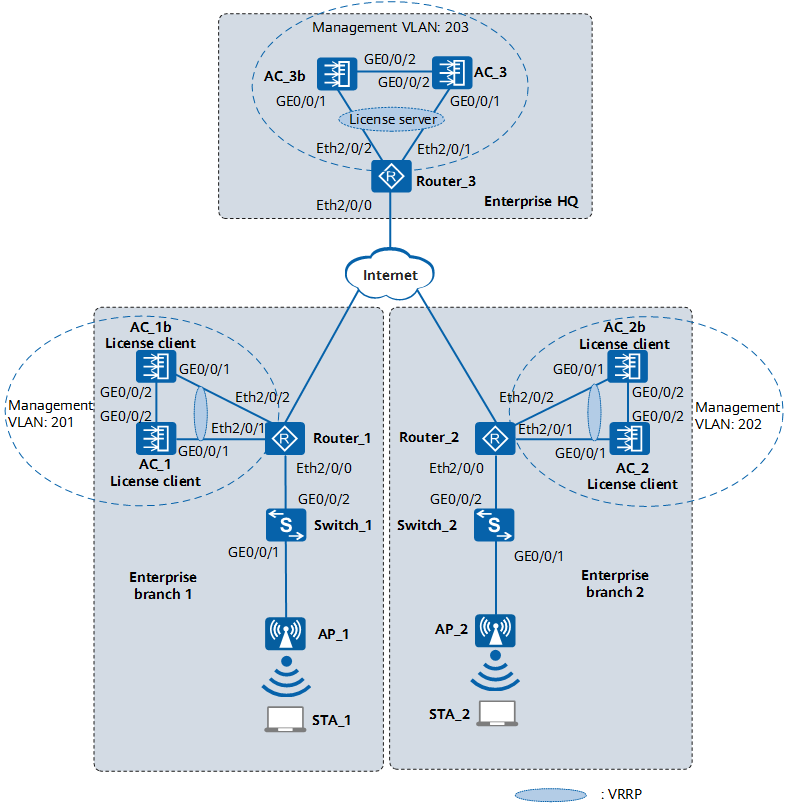

A large enterprise has branches in different areas. ACs are deployed at each branch to manage APs and provide WLAN access services for users. AC backup is required to save costs. In this scenario, the enterprise can deploy a high-performance AC at the headquarters as a standby AC to provide backup services for active ACs in the branches. In addition, license resources are centrally managed on the AC at the HQ and shared among ACs at all branches.

Item |
Data |
|---|---|
License centralized control role |
|
License server address |
Virtual VRRP group consisting of AC_3 and AC_3b: 10.23.203.1 |
License client address |
|
# Enable centralized license control on AC_3.
<HUAWEI> system-view [HUAWEI] sysname AC_3 [AC_3] wlan [AC_3-wlan] license centralized enable
# Enable centralized license control on AC_3b in the same way as the configuration on AC_3.
# Enable the centralized license control function on AC_1 and configure the local address and license server address.
<HUAWEI> system-view [HUAWEI] sysname AC_1 [AC_1] wlan [AC_1-wlan] license centralized enable [AC_1-wlan] license client source ip-address 10.23.201.3 [AC_1-wlan] license server ip-address 10.23.203.1
# Enable centralized license control on AC_1b, AC_2, and AC_2b, and configure the license server address and local addresses. The configuration procedure is similar to that on AC_1.
# Check the configuration of centralized license control on AC_3 functioning as the license server.
<HUAWEI> display license centralized configuration ------------------------------------------------- License centralized server enable : enable License server IP : 10.23.203.1 -------------------------------------------------
# Check the configuration of centralized license control on AC_1 functioning as a license client.
<HUAWEI> display license centralized configuration ------------------------------------------------- License centralized server enable : enable License server IP : 10.23.203.1 License local IP : 10.23.201.3 -------------------------------------------------
AC_1
# sysname AC_1 # wlan license centralized enable license client source ip-address 10.23.201.3 license server ip-address 10.23.203.1 # return
AC_1b
# sysname AC_1b # wlan license centralized enable license client source ip-address 10.23.201.4 license server ip-address 10.23.203.1 # return
AC_2
# sysname AC_2 # wlan license centralized enable license client source ip-address 10.23.202.3 license server ip-address 10.23.203.1 # return
AC_2b
# sysname AC_2b # wlan license centralized enable license client source ip-address 10.23.202.4 license server ip-address 10.23.203.1 # return
AC_3
# sysname AC_3 # wlan license centralized enable # return
AC_3b
# sysname AC_3b # wlan license centralized enable # return